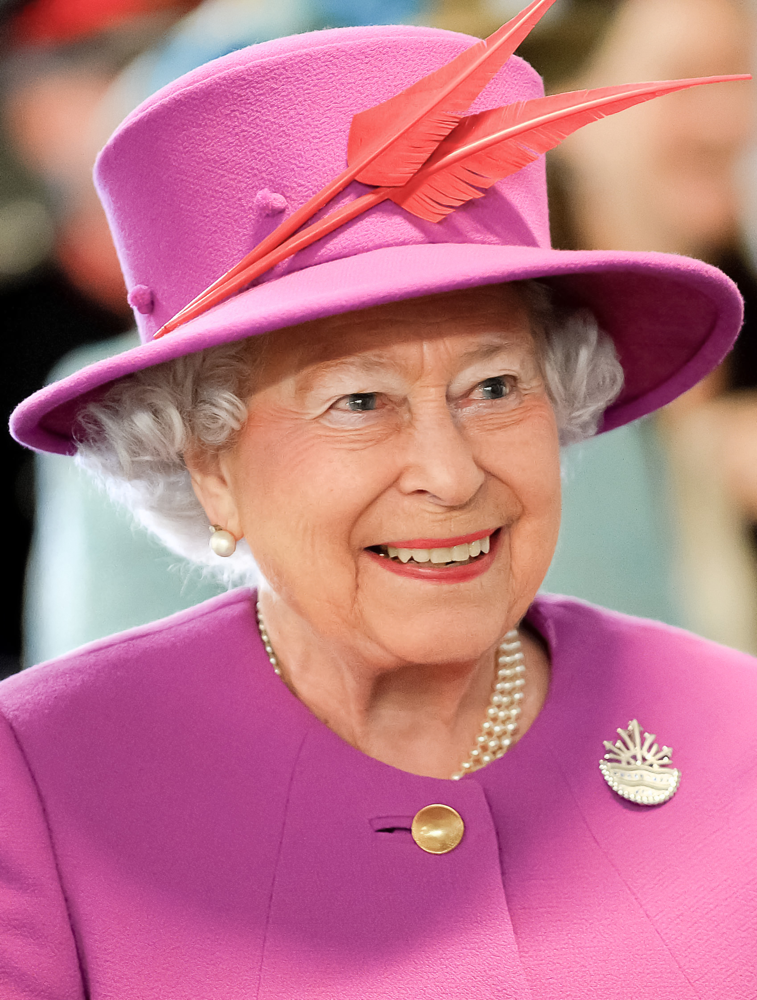

Herdeiro do trono real
Quem assume o trono real? O rei Charles 3º, de 73 anos, assumiu como rei do Reino Unido nesta 5ª feira (8.set.2022) depois de a morte da Rainha Elizabeth 2ª ser anunciada. Ele é o monarca mais velho a assumir o trono.
Isabel II (em inglês: Elizabeth II, nascida Elizabeth Alexandra Mary; Londres, 21 de abril de 1926 – Castelo de Balmoral, Aberdeenshire, 8 de setembro de 2022) foi rainha do Reino Unido e dos Reinos da Comunidade de Nações de 1952 até sua morte em 2022.
Saiba mais!Isabel II (em inglês: Elizabeth II, nascida Elizabeth Alexandra Mary; Londres, 21 de abril de 1926 – Castelo de Balmoral, Aberdeenshire, 8 de setembro de 2022) foi rainha do Reino Unido e dos Reinos da Comunidade de Nações de 1952 até sua morte em 2022. Ela reinou em 32 estados independentes durante a sua vida, 14 dos quais até à data da sua morte. Foi igualmente chefe da Commonwealth, uma grande organização governamental composta por 53 países independentes, sendo também a primeira monarca feminina soberana da Casa de Windsor, Governadora Suprema da Igreja da Inglaterra e Comandante Suprema das Forças Armadas do Reino Unido. Em alguns de seus outros Estados soberanos, possuía o título de Defensora da Fé. O papel político de Isabel II abrangeu grandes áreas, com funções constitucionais significativas, sendo representante ativa da sua nação perante o mundo,[3] com uma popularidade pessoal que tornou um dos ícones notáveis que remetem à cultura britânica. Nasceu na área de Mayfair, em Londres, sendo a primeira filha do duque e da duquesa de Iorque, mais tarde rei Jorge VI e rainha Isabel. O seu pai subiu ao trono em 1936 após a abdicação do irmão, Eduardo VIII, tornando a princesa Isabel na herdeira presuntiva do trono britânico. Isabel foi educada particularmente em casa, começando a exercer funções públicas durante a Segunda Guerra Mundial, servindo no Serviço Territorial Auxiliar. Em novembro de 1947, casou-se com Filipe Mountbatten, ex-príncipe da Grécia e da Dinamarca, em um casamento que durou 73 anos até a morte de Filipe em 2021. Tiveram quatro filhos: Carlos, Príncipe de Gales; Ana, Princesa Real; o príncipe André, Duque de Iorque; e o príncipe Eduardo, Conde de Wessex. Quando o seu pai morreu, em fevereiro de 1952, Isabel, então com 25 anos, tornou-se rainha reinante de sete países independentes dos Reinos da Comunidade de Nações: Reino Unido, Canadá, Austrália, Nova Zelândia, África do Sul, Paquistão e Ceilão, bem como a chefe da Commonwealth. Reinou como monarca constitucional por meio de grandes mudanças políticas, como os problemas na Irlanda do Norte, a devolução no Reino Unido, a descolonização de África e a adesão do Reino Unido às Comunidades Europeias e a retirada da União Europeia. O número de seus reinos variou ao longo do tempo à medida que os territórios conquistaram a independência e alguns reinos se tornaram repúblicas. As suas muitas visitas e reuniões históricas incluem visitas de Estado à República Popular da China em 1986, à Federação Russa em 1994, à República da Irlanda em 2011 e visitas de ou para cinco papas. Na sua vida pessoal destacam-se os nascimentos e casamentos de seus filhos e netos, a investidura do Príncipe de Gales e a celebração de marcos como seus jubileus de Prata em 1977, Ouro em 2002 e Diamante em 2012. Momentos de dificuldade incluem a morte do seu pai aos 56 anos, o assassinato de Louis Mountbatten, tio do príncipe Filipe, o fim dos casamentos dos filhos em 1992 — ano que a própria rainha classificou como annus horribilis —, a morte em 1997 de Diana, Princesa de Gales, ex-mulher de Carlos, e as mortes de sua irmã e mãe em 2002. Isabel ocasionalmente enfrentou movimentos republicanos e pesadas críticas à família real, porém o apoio à monarquia e sua popularidade pessoal permaneceram altos até ao fim de sua vida. Em 6 de fevereiro de 2022, Isabel II celebrou 70 anos de reinado, sendo a única monarca britânica a celebrar um Jubileu de Platina. A partir de 12 de junho do mesmo ano, passou a ocupar a segunda posição entre os monarcas com reinados mais longos, atrás apenas do rei Luís XIV (da França — este com 72 anos e 110 dias de reinado). Foi também a monarca reinante mais idosa de todos os tempos.[4] Durante o seu reinado convidou 15 primeiros-ministros a formar governo, a última Liz Truss dois dias antes de morrer. Isabel II morreu em 8 de setembro de 2022, no Castelo de Balmoral, em Aberdeenshire, na Escócia,[5] sendo sucedida no trono pelo filho Carlos, Príncipe de Gales, como Carlos III do Reino Unido.
Quem assume o trono real? O rei Charles 3º, de 73 anos, assumiu como rei do Reino Unido nesta 5ª feira (8.set.2022) depois de a morte da Rainha Elizabeth 2ª ser anunciada. Ele é o monarca mais velho a assumir o trono.